1. futex简介
Futex 是Fast Userspace muTexes的缩写，由 Linux 2.5.7开始引入。传统的SYSTEM V IPC机制需要系统调用进入内核态去操作某个内核对象，由内核来仲裁同步，事实上大部分情况下并没有资源竞争，此种情况下仍然进入内核态会显得很浪费，系统开销增加进而造成性能折扣，由此引入futex的概念。
futex是一种用户态和内核态混合机制，需要两个部分合作完成。在用户态，futex指的是一个原子变量，用来记录某种锁状态。需要持锁时，如果锁空闲则直接改变futex变量值，即表明持有该锁，不需要陷入内核。释放锁时，如果锁状态中没有线程等锁，则直接置锁状态为空闲，也无需陷入内核。
对于内核而言，futex是一个系统调用。当用户态出现锁竞争，线程需要休眠等待时，通过futex系统调用陷入内核并挂在wait queue中。当释放锁发现有线程在休眠等锁时，通过futex系统调用陷入内核去唤醒等锁的线程。
相比传统的SYSTEM V IPC机制，在无竞争时，用户态通过futex原子变量操作，替代内核对象操作，来提升性能。而绝大部分情况下，锁都是无竞争的，所以futex机制实现用户空间锁非常高效。
1.1 用户态futex同步机制
所有的futex同步操作都应该从用户空间开始，首先创建一个futex原子变量。其中以pthread_mutex的锁操作过程为例，state表示其持有和竞争状态，0为无人持锁，1为有人持锁但无人竞争，2为有人持锁且有竞争。
- 当线程A准备lock持锁，发现state\=\=0，则直接通过CAS(Compare and Swap)原子操作将state=1，表示持有该锁就结束了lock过程，整个过程并不需要内核参与，非常高效；
- 当线程B到来准备lock持锁，发现state\=\=1，锁已经被别人持有，于是使state=2表示有竞争，然后通过futex_wait(&state) 操作陷入内核，内核会根据用户空间地址&state创建一个等待队列，然后将B加入到&state的等待队列中，将B休眠；
- 当线程A退出临界区unlock释放该锁时，发现state\=\=2意识到有人竞争，会将state=0，然后通过futex_wake(&state) 陷入内核来唤醒等待&state的线程B。线程A返回用户空间继续执行，退出unlock流程；
- 线程B从futex等待队列中移除，并加入调度程序的就绪队列，等待调度。得到调度后返回用户空间重新判断state\=\=0，于是重复步骤1；
1.2 内核态futex系统调用
linux上提供了sys_futex系统调用，对进程竞争情况下的同步处理提供支持。其原型和系统调用号为如下，参数常用的就是三个。uaddr就是用户态下共享内存的地址，也就是用户态的futex变量地址。op存放着操作类型，最常用的是futex_wait和futex_wake。val表示要操作的线程个数。
1 | #include <linux/futex.h> |
内核中futex内部采用了哈希表的数据结构，保存那些需要睡眠的任务。通过用户空间地址 uaddr，flag，以及 futex的读写状态可以计算出hash key值，将需要睡眠的任务的task_struct放到对应的哈希桶上的优先链表的节点中。
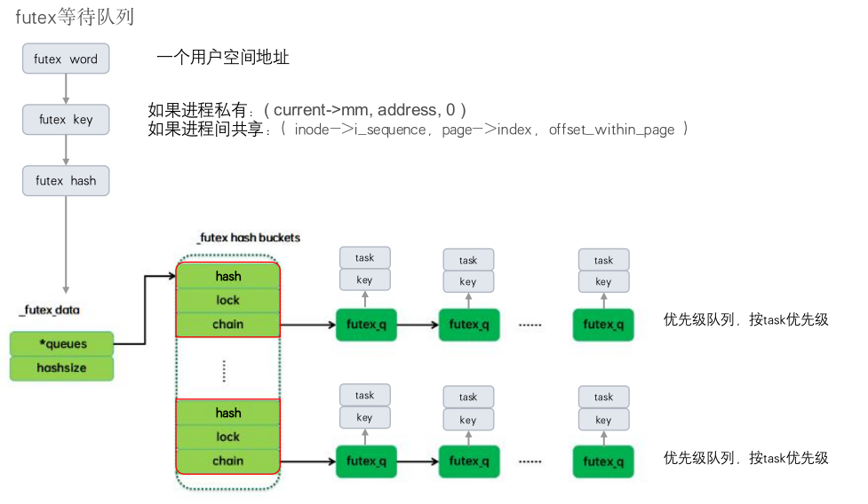
futex_wait(uaddr，val，abs_time) 流程：
- 计算 futex 对应的 key，获取 key 对应的哈希表链表。
- 获取哈希桶链表自旋锁，如果 *uaddr == val 返回错误给用户态。
- 否则将当前任务状态改为 TASK_INTERRUPTIBLE，并将当前任务插入到 futex 等待队列，释放哈希桶链表自旋锁，然后调度器重新调度。
- 当该线程从睡眠中被唤醒时，例如超时或者被wakeup，做相应处理后，返回用户态。
futex_wake(uaddr，nr_wake) 流程：
- 计算 futex 对应的 key，获取 key 对应的哈希桶。
- 获取哈希桶的自旋锁，遍历这个哈希桶上的优先链表，找到key匹配的任务，说明该任务在等待 futex，将当前任务添加到唤醒队列 wake_q 中，如果达到了 nr_wake 个，则退出循环。
- 释放哈希桶自旋锁，唤醒队列 wake_q 中每一个任务。
2. futex在Android的应用
下面是安卓系统中用户空间通用的同步机制框图，最终基本上都是基于 futex 系统调用来实现的。其中java部分同步机制，主要是由ART虚拟机实现的synchronize，和java.util.concurrent库实现的lock机制。C++部分主要是pthread库中实现的锁机制。
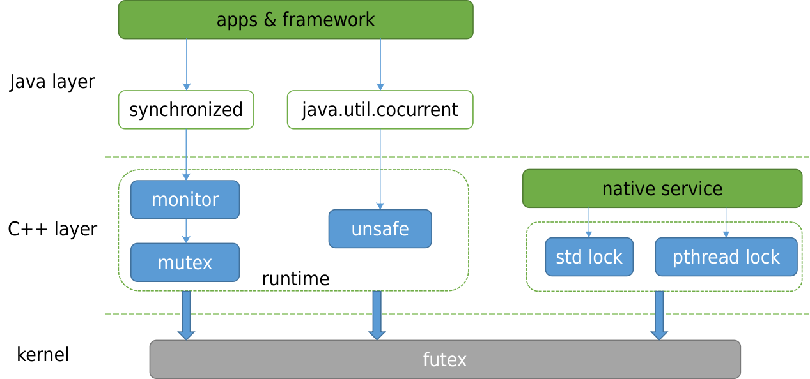
2.1 ART锁
Synchronize是java中的隐式锁，它的获取锁和释放锁都是隐式的，完全交由虚拟机实现。Synchronize生成的字节码会对应两条指令，分别是monitor-enter和monitor-exit。虚拟机锁一开始会通过CAS(Compare and swap)原子操作自旋，但是随着等锁时间增加，锁会不断升级，如果迟迟没有等到锁，最终升级为重量级锁，需要陷入内核休眠。
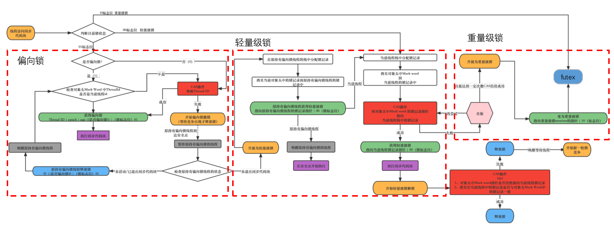
重量级锁最终会通过futex系统调用，由内核参与实现线程的挂起和唤醒。
1 | void Monitor::Lock(Thread* self) |
2.2 JUC锁
java.util.concurrent包中提供的锁机制，称为JUC锁。相比Synchronize更加灵活，功能也更丰富，但是安全性也更低，需要开发者对JUC锁有足够的理解。根据功能分为下面几类
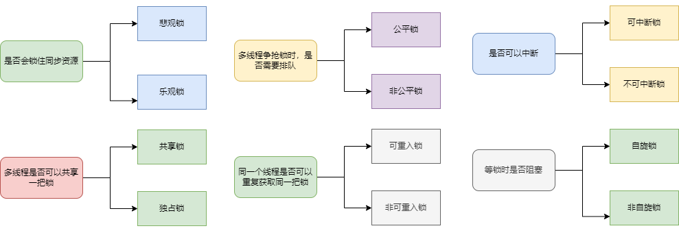
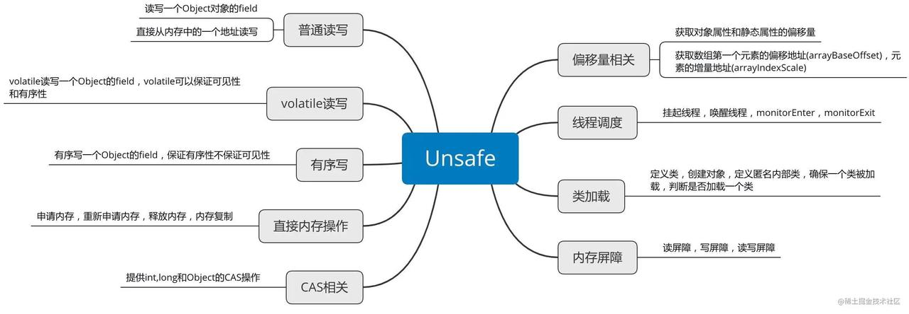
2.3 pthread锁
pthread锁是native层提供的pthread库中的一部分，提供给native层代码使用，来实现各种同步机制。
2.3.1 pthread_mutex
下面这段代码是pthread_mutex_lock核心部分，通过原子操作atomic_exchange_explicit，这个操作是将锁原子变量_Atomic(uint16_t) state替换为locked_contended，即置为处于竞争状态，并返回原本的state值。如果原本的锁状态不为unlocked即已经被人持有了，则调用__futex_wait_ex陷入内核休眠。如果原本锁状态就是unlocked，也就是没有人持有，则不休眠，也不需要内核参与。
1 | 594 const uint16_t unlocked = shared | MUTEX_STATE_BITS_UNLOCKED; |
同样pthread_mutex_unlock核心代码，首先通过原子操作将锁状态state置为unlocked，然后判断原本的锁状态state是否为竞争状态，如果是竞争状态则调用__futex_wake_ex陷入内核来唤醒一个等待该state变量的线程
1 | 629 if (atomic_exchange_explicit(&mutex->state, unlocked, |
2.3.2 pthread_cond
条件变量pthread_cond，2个典型操作wait和signal，等待和发射某个条件，对应的底层实现分别是futex_wait和futex_wake。
1 | int pthread_cond_wait(pthread_cond_t* cond_interface, pthread_mutex_t* mutex) { |
2.3.3 pthread_rwlock
读写锁，加读锁或写锁时，如果遇到互斥情况，通过futex_wait陷入内核休眠等待。释放读写锁时，通过futex_wake陷入内核唤醒等锁线程
1 | int pthread_rwlock_rdlock(pthread_rwlock_t* rwlock_interface) { |
3. 内核社区的futex优化方案
谷歌通过增加内核futex_swap接口，实现用户态任务调度框架 SwitchTo，来提高两个线程唤醒+休眠的效率。并在此基础上实现direct-thread-switch功能，使被唤醒线程直接利用即将休眠的线程时间片运行，减少调度开销。优化主要是在线程协作的场景，例如IPC通信，client线程切换到特定的server线程，或者server线程切换回到client线程。
移动终端厂商利用futex传递Ux属性，使锁的owner线程继承Ux属性一段时间。具备Ux属性的线程在调度、io、内存等资源的竞争上更优先，owner线程执行更快，这样可以减少原Ux线程等待该futex的时间。
下面分5节分别介绍futex_swap、current_cpu，direct-thread-switch、futex vip优化思路，及实际调试验证结果。
3.1 futex_swap
在谷歌内部有一套闭源的用户态任务调度框架 SwitchTo，这个框架可以为谷歌提供延迟敏感的服务，对运行的内容进行细粒度的用户空间控制/调度，它可以让内核来实现上下文的切换，同时将任务何时切换，何时恢复的工作交给了用户态的程序来做，这样既可以实现在任务间协作式切换的功能，又可以不丧失内核对于任务的控制和观察能力。这是使用 SwitchTo 和使用其他线程间切换的组件的上下文切换性能对比，可以看到在使用 SwitchTo 后切换的性能比其他组件提高了一个数量级别。
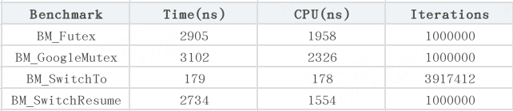
谷歌工程师Peter Oskolkov posk@google.com向 LKML（Linux Kernel Mail List） 提出的补丁中有关 futex_swap() 的实现。可以确定的是，SwitchTo 构建在这个futex_swap内核函数之上。futex_swap接口引出：[2] https://lore.kernel.org/lkml/48058b850de10f949f96b4f311adb649b1fb3ff2.camel@posk.io/
对于一些线程交互的场景，例如线程T1与线程T2协助完成一项任务，T1完成一个阶段任务后，需要移交给T2然后等待T2的结果，T2完成阶段任务后再移交给T1。常见的RPC通信一般都是这种交互模式，例如client唤醒server执行相应的任务，client自己休眠，然后server执行完成后唤醒client。用futex操作简化成下面的三个步骤。
a. T1: futex-wake T2, futex-wait
b. T2: wakes, does what it has been woken to do
c. T2: futex-wake T1, futex-wait
其中步骤a和c都有2次系统调用，如果有一个futex内核接口，能一次实现两个过程，即一个接口完成1个线程的唤醒和1个线程的休眠，将会带来一些的性能提升。
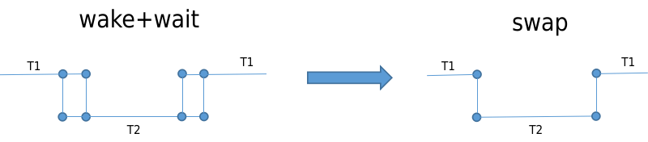
futex_swap(uaddr，val，abs_time，uaddr2) 流程：
- 获得等待在 uaddr2 上的预备唤醒队列，记录队列第一个任务为 next，对其他任务则执行唤醒。
- 对 uaddr1 执行 futex_wait()，传入 next。
1 | int futex_swap(u32 __user *uaddr, unsigned int flags, u32 val, |
移植到Android平台后，实际测试数据结果futex_swap较FUTEX_WAKE_WAIT相差不大，与社区的提升29.5%有一定出入，不知是不是有什么前置条件。
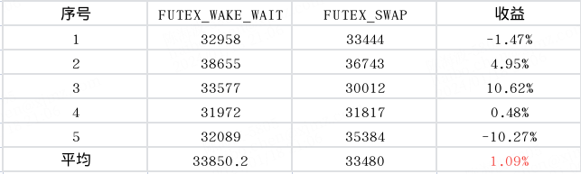
为了究其原因，从耗时角度对两种运行模式进行拆解，得到下面的流程图。在多核情况下，T1和T2线程会分别在不同cpu上运行。
从整体上对比分析，FUTEX_SWAP相比FUTEX_WAKE_WAIT，虽然少了2次syscall的耗时，但是这2次都是在并行的时间里完成的，并不影响测试用例链路耗时，仅仅是减少了系统的整体负载损耗。经过抽离简化，2种模式下的执行耗时其实都是下面这样，并没有多大差异，所以耗时相同也符合预期。
虽然futex_swap操作并没有能减少2个线程切换的耗时，但是成功将futex_wake+futex_wait操作融合为一个系统调用，为后续的深度优化提供了可能。
3.2 wake_up_process_prefer_current_cpu
谷歌工程师 Peter Oskolkov的优化patch[3] ，https://lore.kernel.org/lkml/d5cf58486a6a5e41581bed9183e8a831908ede0b.camel@posk.io/
在T1通过futex_swap操作唤醒T2并休眠自己时，优先将T2选核到T1的cpu上。
优化patch比较简单，在try_to_wake_up时传入自定义的WF_CURRENT_CPU标志位，在select_task_rq_fair选核时，判断如果有该标志位就将T2的cpu选到当前T1的cpu。这样T1 通过schedule()调度出去时，在next = pick_next_task(rq, prev, &rf)中，极大概率可以直接选中T2，进行无缝切换。同理T2切换到T1时也是如此。
1 | diff --git a/kernel/futex.c b/kernel/futex.c |
通过实测数据，经过current_cpu优化后的FUTEX_SWAP执行耗时降低92.69%，令人惊讶。
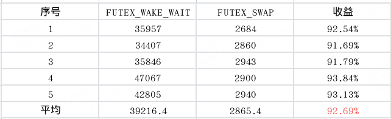
通过trace分析，截取2种测试模式运行时三次切换的片段，FUTEX_WAKE_WAIT时2个线程在不同cpu上来回切换，cpu实际频率只有500MHz，因为负载分配在2个cpu上，每个cpu的占用率不到50%。current_cpu优化后的FUTEX_SWAP时，2个线程跑在同一个cpu上，实际cpu频率有2.5GHz，因为负载集中在1个cpu上，cpu的占用率接近100%，所以频率自动调的也高。虽然速度提升10倍，但是其中有5倍是cpu频率影响。
FUTEX_WAKE_WAIT模式：3轮切换耗时182us
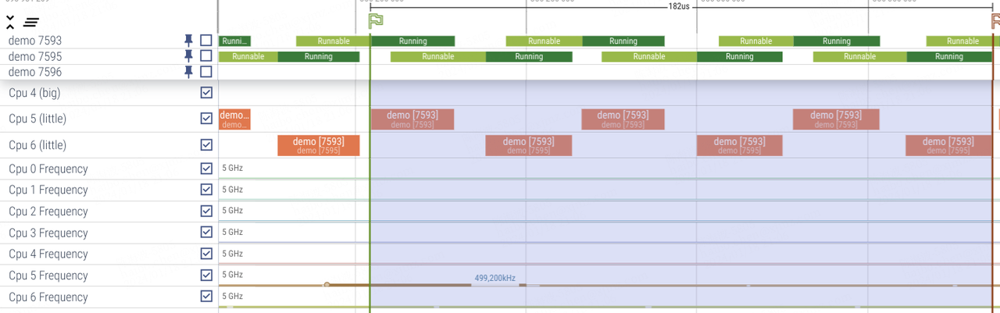
FUTEX_SWAP模式：3轮切换耗时18.4us
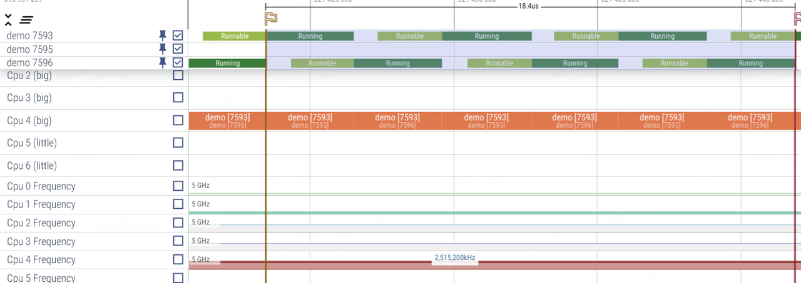
综上分析，执行时间降低10倍原因:
- cpu频率高5倍：跑在单核上，cpu利用率高，更有效触发提频
- 调度效率高2倍：同一个cpu，无缝切换，避免从idle退出的耗时，调度尾延更低，同时cache命中率更高。
所以从patch优化效率上来看，实际优化了2倍。在Android上，binder作为主要的IPC通信手段，运行场景跟这很类似，一个binder线程A唤醒另一个binder线程B，线程B执行完任务后反过来唤醒线程A，2个线程交替执行。如果把这里的current_cpu优化放在binder上，或许也有一定的优化效果。
3.3 direct-thread-switch
脱离 Android 的全自研鸿蒙 next 宣称支持轻量级线程并发模型，可能就是 direct-thread-switch，已合入服务器欧拉操作系统。
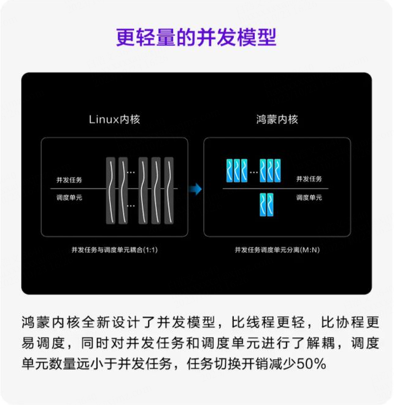
本节内容引自华为欧拉操作系统论坛：
1 | 在操作系统中，线程是一个独立的运行单元，一般认为每个线程是独立运行的；但是在实际应用中，经常出现一个业务功能需要多个线程协同处理，这时候线程和线程之间存在逻辑上的关联关系，经常出现线程之间的唤醒与被唤醒。线程的每次“交互”需要内核调度模块参与，一次完整的交互，内核调度模块需要参与选核，入队列，更新负载信息，选任务等流程。系统中如果线程比较多（有数千个线程）,线程负载比较小的场景下，会导致内核调度开销比较大，而且线程之间交互的效率比较低（线程B需要入队列，等待CPU资源，导致runable的时间比较长）。在《The Case for Thread Migration- Predictable IPC in a Customizable and Reliable OS》这篇论文中讲述了一种新的线程切换思路：执行实体与调度实体分离。在同步IPC场景中，线程之间发生切换，只切换执行实体不切换调度实体，从而提升IPC的通信效率，降低调度开销。通过测试，这种技术可以使得同步IPC的效率提升近10倍。 引用 |
将原任务直接切换到新任务，bypass调度的技术命名为direct-thread-switch，bypass调度的前提必须是利用原任务的剩余时间片，否则会打破CFS调度的公平性。具体由briansun imbriansun@gmail.com提交到华为欧拉操作系统论坛上实现的patch
https://gitee.com/openeuler/kernel/commit/dad99a5750c4c942300c6626888a6ad52e62bf24
从patch的描述看，direct-thread-switch是在futex_swap的基础上实现的，是对futex_swap的进一步优化。futex_swap将futex_wake+futex_wait融合到一次系统调用，实现线程T2的唤醒和线程T1的休眠，涉及2次调度。而direct-thread-switch则是在此基础上，bypass调度，直接利用线程T1的剩余时间片来运行线程T2，避免了2次调度的开销。由于是基于futex_swap，所以使用场景也同样有限制，典型的场景是IPC通信，线程模型为T1->T2—-T2->T1。
direct-thread-switch代码实现很复杂，目前也只理解了很少一部分。在原有futex_swap基础上，在T1->T2线程切换时另起炉灶，替代了原有的schedule()函数，以__direct_thread_switch(next)函数直接从T1切换到T2。并提出共享调度实体shared sched_entry的概念，来保证CFS调度的公平性及调度器稳定性。
futex_swap：
1 | + if (flags & FUTEX_FLAGS_DTS_MODE) |
由于内核版本差异等因素，该patch并未移植成功，无法实际测试效果，借用openEuler内核社区测试了(futex_wake+futex_wait)、futex_swap、(futex_swap+direct-thread-switch)的切换耗时，futex_swap相比(futex_wake+futex_wait)提升了29.5%，(futex_swap+direct-thread-switch)相比(futex_wake+futex_wait)提升了37.1%
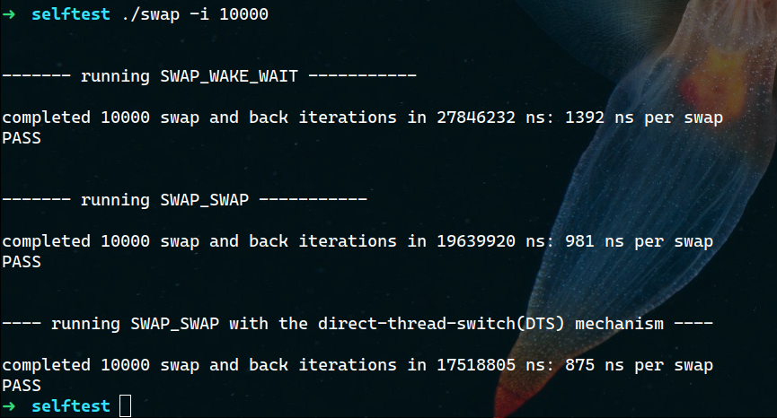
3.4 futex vip插队优化
目前已有的针对锁的优化特性都是针对内核锁，用户空间锁则不在这些优化范围内，两者有共性。
如果某个用户锁有大量线程并发竞争在等待，等锁造成的响应延迟将非常大。对于用户体验相关的前台vip线程来说非常不友好，需要适当向vip线程倾斜。线程B被加入futex等待队列，这个队列排序原则是RT线程按照其线程优先级0~99来排序，普通线程全部按照优先级100，然后FIFO先进先出原则排序。用户体验相关的vip线程很多是普通线程，所以在这里排队没有优势，需要改变规则，将vip线程排在普通线程之前，RT线程之后。
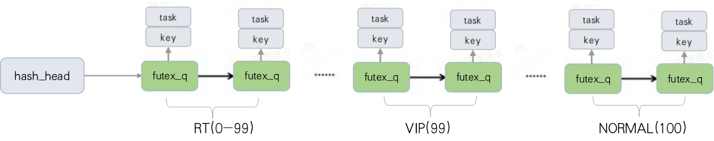
通过测试用例，创建一个持锁线程A(demo 10622)，然后创建9个普通线程B和一个vip线程C(demo 10630)。线程A先持mutex锁，9个普通线程B等锁，线程C等锁，然后通过命令将线程C设置为vip线程。
当线程A释放锁时，可以看到vip线程C最先被唤醒，即使是最后一个入队也最先被唤醒，其他普通线程则是按照等锁入队FIFO顺序唤醒。所以vip线程的等锁时间也是最短的
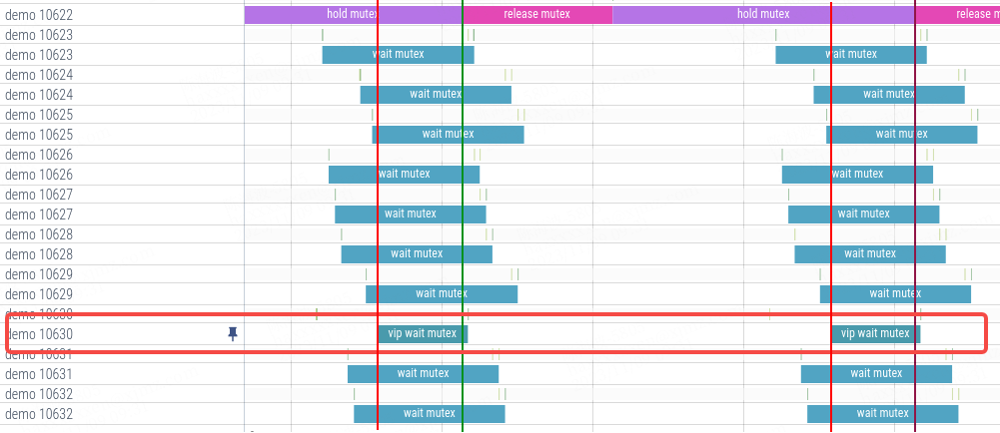
为了防止普通线程饿死，还采取了规避措施，如果队列中第一个普通线程等待时间已经超过一定时间，则本次不做vip插队操作。可以看到，当vip线程 12446在等锁入队时，前面其他线程等锁时间超过347.2ms，所以本次不插队，vip线程按照入队顺序出队。
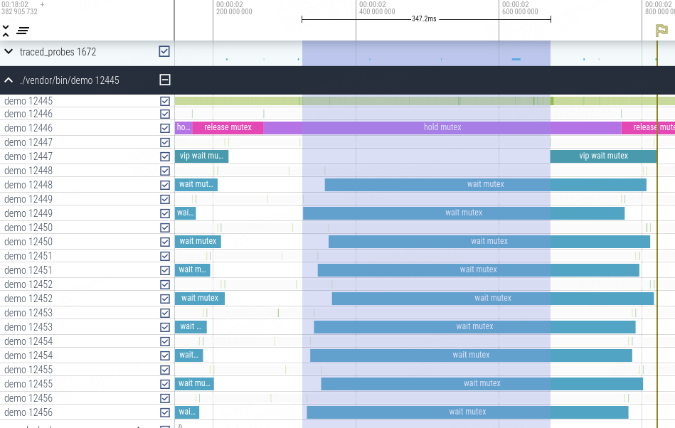
3.5 futex vip继承优化
在 vip_task 特性中，vip线程享有CFS优先调度、内核锁插队、内存快速分配，binder 优先与继承等优势，vip线程在等普通线程持有的用户空间锁时，普通线程没有相应的资源倾斜，可能导致其在临界区运行很慢，造成”优先级”翻转，vip线程的优势也得不到发挥。参考进程优先级继承的优化思路，vip线程在等用户锁时，临时赋予non-vip线程vip特权一段时间，让其尽快执行脱离临界区，最大程度减少vip线程的等待时延。
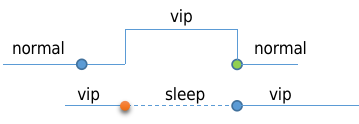
futex vip继承在内核实现上，有一些需要解决的问题，即vip线程在等futex锁时，需要知道持锁的线程holder是谁，才能针对持锁线程做boost。不同于内核中的mutex，现有基于futex实现的接口，并没有包含锁owner信息，所以需要对用户空间中相关接口做调整。
对于native的pthread_mutex锁，在调用futex_wait时增加一个参数用来传递futex_info信息，其中就包括owner_id。
内核实现，首先判断等锁线程是不是vip线程，如果是vip则解析其owner_id参数，找到owner task并对其赋予临时的vip特权，直到该owner通过futex_wake来唤醒等待的vip线程，解除vip特权。
4. futex vip收益测试
由于3.1-3.3节的优化依赖于上层的具体应用场景来实现，在安卓上并未找到合适的软件场景，所以没有做过多收益测试。3.4，3.5节契合安卓手机场景，我们分别模拟用户使用场景测试做了实测数据，测得对比数据。
正常使用场景，vip等futex的最大等待时间减少70%，超过100ms的次数减少25%，vip线程等futex总时间减少24%。
重载使用场景，vip等futex的最大等待时间减少67%，超过100ms的次数减少38%，超过200ms次数减少45%，vip线程等futex总时间减少21%。
5. 总结
本文首先介绍了linux的futex系统调用，及基于futex的同步机制。然后列举了futex在Android上的几种应用，包括ART锁、JUC锁、pthread锁。
介绍了几种futex性能优化相关的开源案例，其中futex_swap(包含current_cpu)优化和direct-thread-switch优化，线程切换性能分别提升了29.5%和37.1%。futex vip插队及属性继承优化，最大程度保证用户交互线程的响应速度。
最后futex vip插队及属性继承优化，实际模拟用户场景测试收益，取得不错的收益。改善优先级翻转和锁等待的性能延时问题，提高前台应用响应速度，降低偶现卡顿的机率。
This is copyright.